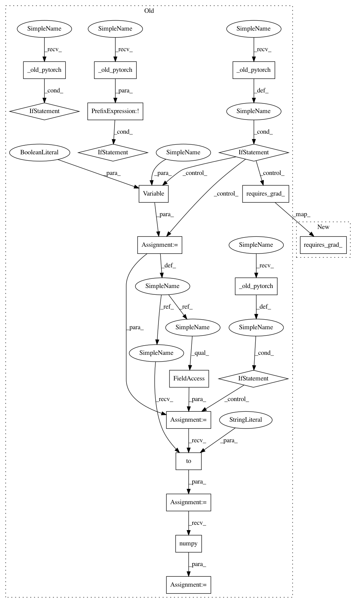

7239447415c21586291d5c993e30fba5df54b9db,foolbox/models/pytorch.py,PyTorchModel,predictions_and_gradient,#PyTorchModel#Any#Any#,105
Before Change
// lazy import
import torch
import torch.nn as nn
if self._old_pytorch(): // pragma: no cover
from torch.autograd import Variable
input_shape = image.shape
image, dpdx = self._process_input(image)
target = np.array([label])
target = torch.from_numpy(target).long().to(self.device)
images = image[np.newaxis]
images = torch.from_numpy(images).to(self.device)
if self._old_pytorch(): // pragma: no cover
target = Variable(target)
images = Variable(images, requires_grad=True)
else:
images.requires_grad_()
predictions = self._model(images)
ce = nn.CrossEntropyLoss()
loss = ce(predictions, target)
loss.backward()
grad = images.grad
if self._old_pytorch(): // pragma: no cover
predictions = predictions.data
predictions = predictions.to("cpu")
if not self._old_pytorch():
predictions = predictions.detach()
predictions = predictions.numpy()
predictions = np.squeeze(predictions, axis=0)
assert predictions.ndim == 1
assert predictions.shape == (self.num_classes(),)
if self._old_pytorch(): // pragma: no cover
grad = grad.data
grad = grad.to("cpu")
if not self._old_pytorch():
grad = grad.detach()
grad = grad.numpy()
grad = np.squeeze(grad, axis=0)
grad = self._process_gradient(dpdx, grad)
assert grad.shape == input_shape
After Change
images = image[np.newaxis]
images = torch.from_numpy(images).to(self.device)
images.requires_grad_()
predictions = self._model(images)
ce = nn.CrossEntropyLoss()
loss = ce(predictions, target)
In pattern: SUPERPATTERN
Frequency: 3
Non-data size: 19
Instances
Project Name: bethgelab/foolbox
Commit Name: 7239447415c21586291d5c993e30fba5df54b9db
Time: 2019-05-17
Author: git@jonasrauber.de
File Name: foolbox/models/pytorch.py
Class Name: PyTorchModel
Method Name: predictions_and_gradient
Project Name: bethgelab/foolbox
Commit Name: 7239447415c21586291d5c993e30fba5df54b9db
Time: 2019-05-17
Author: git@jonasrauber.de
File Name: foolbox/models/pytorch.py
Class Name: PyTorchModel
Method Name: batch_backward
Project Name: bethgelab/foolbox
Commit Name: 7239447415c21586291d5c993e30fba5df54b9db
Time: 2019-05-17
Author: git@jonasrauber.de
File Name: foolbox/models/pytorch.py
Class Name: PyTorchModel
Method Name: predictions_and_gradient
Project Name: bethgelab/foolbox
Commit Name: 7239447415c21586291d5c993e30fba5df54b9db
Time: 2019-05-17
Author: git@jonasrauber.de
File Name: foolbox/models/pytorch.py
Class Name: PyTorchModel
Method Name: batch_gradients